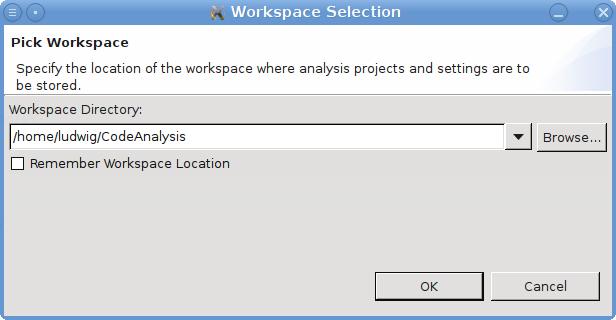

In menu File > Select Workspace... a new workspace can be selected. A dialog pops up which is already known from the first startup:
Within the dialog a new workspace directory can be selected. Additionally, it can be specified whether it is asked explicitly for a workspace before the next startup with the check box provided in the dialog.